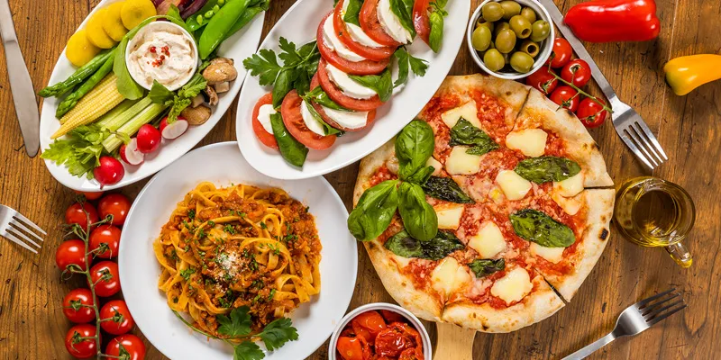

Gastronomia Italiana
Pratos Típicos
A culinária italiana é famosa mundialmente por sua simplicidade e sabor. Cada região tem suas especialidades únicas.
- Pizza Napolitana
- Pasta al Dente
- Risotto alla Milanese
- Osso Buco
- Tiramisù
Vinhos Italianos
A Itália é um dos maiores produtores de vinho do mundo, com uma grande variedade de uvas e estilos.
| Região | Vinho Famoso |
|---|---|
| Toscana | Chianti |
| Piemonte | Barolo |
| Vêneto | Prosecco |